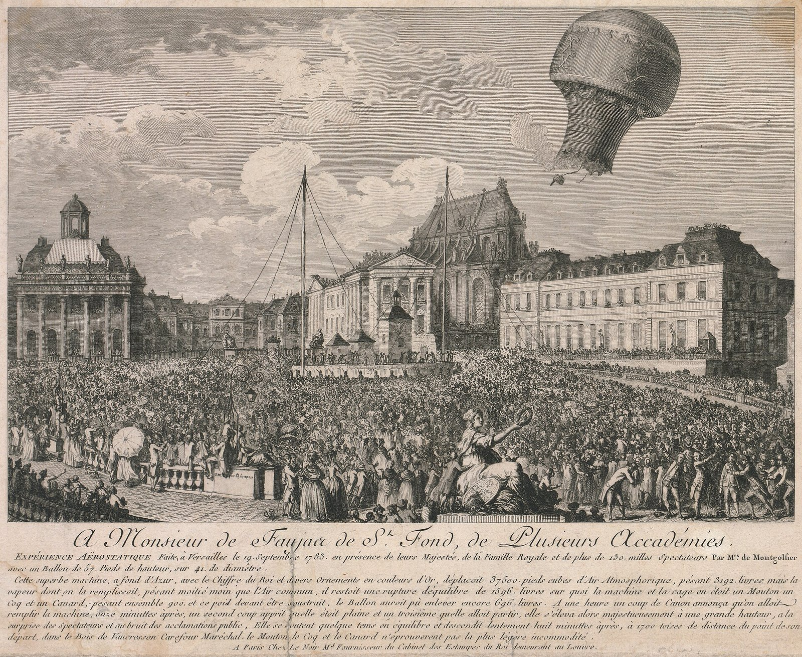
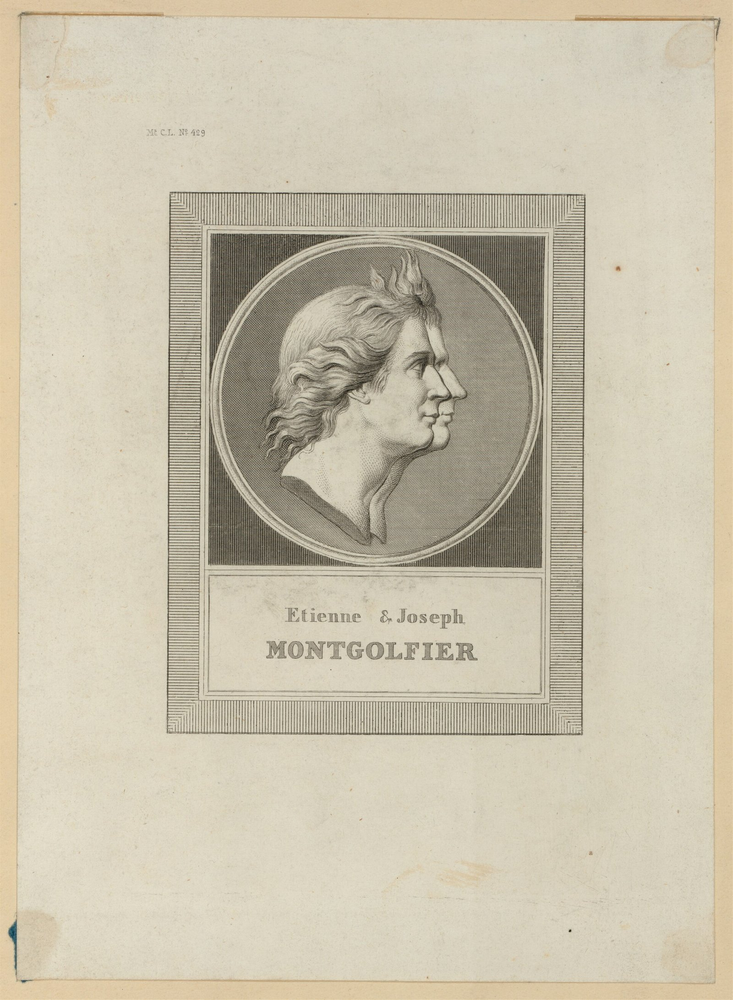
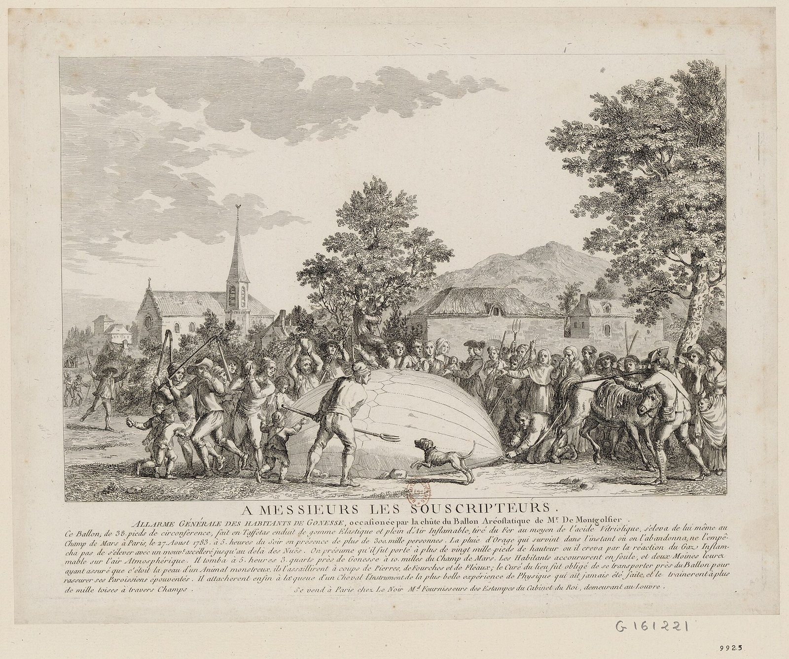

[하늘길, 항공②] 안노네 장터의 천 주머니에서 베르사유의 양·오리·수탉까지, 1783년 열기구가 연 하늘길
AI경제저널=김갑봉 기자 | 1783년 6월 4일 프랑스 남부 안노네 장터에서 종이를 덧댄 거대한 천 주머니가 떠올랐다. 약 1000m로 추정되는 높이에서 10분쯤 떠 있던 주머니는 1.5마일(약 2.4㎞) 넘게 떨어진 곳에 내려앉았다(브리태니커).

안노네 제지공장집의 열여섯 남매
조제프미셸 몽골피에(1740~1810)와 자크에티엔 몽골피에(1745~1799)는 제지공장을 운영한 피에르 몽골피에의 16남매 가운데 둘이었다. 안노네 인근 비달롱에 있던 이 공장이 형제의 실험 비용을 뒷받침했다(브리태니커).

조제프는 1782년 난롯가에서 불티가 굴뚝으로 솟는 모습을 보다 구상이 떠올랐다고 전해진다. 뜨거운 공기를 군사에 쓸 방도를 생각해 냈고 머릿속에는 요새 지브롤터가 있었다. 그는 가벼운 나무틀에 호박단을 씌우고 아래 구멍에서 종이를 태워 천장까지 띄웠다(과학사연구소).
크기와 모양과 상승력을 계산한 이는 동생 에티엔이었다. 형제는 안쪽에 종이를 댄 천 조각을 이어 점점 큰 주머니를 만들었다. 조각은 단춧구멍 수백 개에 끈을 꿰어 묶었다(과학사연구소).
첫 공개 시연은 안노네의 지방 의회 의원들이 지켜보는 가운데 열렸고 소식은 곧 파리까지 닿았다. 몽골피에 쪽은 파리에서 후원을 구해 루이 16세와 정부 관료들의 호의를 얻었다(과학사연구소).
수소로 맞선 파리의 과학자
소식을 들은 이는 공개 물리학 강연으로 이름난 파리의 자크 샤를(1746~1823)이었다. 그는 몽골피에가 수소를 썼으리라 짐작했고 로베르 형제와 함께 수소 기구를 만들었다(과학사연구소·브리태니커).
8월 27일 파리의 큰 군사 열병장 샹드마르스에서 무인 수소 기구가 떠올라 곧 구름 속으로 사라졌다. 한 시간이 못 돼 파리 북쪽 마을에 내려앉은 기구를 놀란 농민들이 농기구로 공격했다(과학사연구소).

1783년 9월 19일, 베르사유의 양과 오리와 수탉
9월 19일 베르사유 궁전에서 몽골피에 쪽은 왕실 가족이 보는 앞에서 더 큰 기구를 띄웠고 아래 화로에서는 짚과 양털이 탔다. 양과 오리와 수탉을 먼저 태운 까닭은 높은 하늘에 사람이 숨 쉴 공기가 있는지 알 수 없었기 때문이다(과학사연구소).
기구는 8분 동안 떠 3㎞대 거리에 내려앉았고 세 동물은 모두 살아서 내렸다. 내려앉은 거리는 브리태니커가 2마일(약 3.2㎞), 판화 설명문이 1700투아즈(toise, 옛 프랑스 길이 단위, 약 3.3㎞)로 적었다(과학사연구소·브리태니커·미국 의회도서관).
설명문은 기구를 높이 57프랑스피트(약 18.5m), 지름 41프랑스피트(약 13.3m)로 적었다. 같은 설명문은 구경꾼이 13만명을 넘었다고도 적었지만 독립된 다른 기록으로는 확인되지 않은 수치다. 왕실 가족과 많은 군중이 지켜봤다는 점만 사실로 본다(미국 의회도서관).
줄을 푼 첫 사람들, 샤를의 두 시간
10월 15일 장프랑수아 필라트르 드 로지에가 줄에 묶인 기구로 먼저 올랐다. 11월 21일에는 파리 라뮈에트 성에서 필라트르 드 로지에와 다를랑드 후작 프랑수아 로랑이 줄을 풀고 떠올랐다(과학사연구소·브리태니커).
푸른 바탕에 금빛 왕실 문장을 단 기구는 25분 동안 파리 상공 약 9㎞를 날아 안전하게 내려앉았다. 다를랑드는 그날 저녁 미국 공사 벤저민 프랭클린을 찾아가 비행담을 들려줬다(과학사연구소·브리태니커).
12월 1일 샤를과 마리노엘 로베르는 수소 기구로 2시간을 날아 파리 북쪽 평원에 내려앉았다. 열기구는 몽골피에르(montgolfière), 수소 기구는 샤를리에르(charlière)라는 이름을 얻었다(과학사연구소).
구경거리가 된 과학, 그리고 첫 희생
18세기 자연철학자들은 이성과 진보를 믿는 계몽의 분위기 속에서 공기를 여러 기체로 갈라 성질을 따졌다. 헨리 캐번디시는 1766년 수소를 분리했고 앙투안 라부아지에는 1783년 6월 물이 수소와 산소의 화합물임을 밝혔다(과학사연구소).
프랭클린은 파시에 살며 8월 27일 샤를의 무인 기구가 구름 속으로 사라지는 모습을 지켜봤다. 사흘 뒤 조지프 뱅크스에게 쓴 편지에서 기구가 "우리가 지금은 상상도 못 하는 자연철학의 발견으로 가는 길을 닦을 수 있다"고 적었다(프랭클린 편지·과학사연구소).
쓸모를 묻는 회의론자에게 "갓난아기는 무슨 쓸모가 있소"라고 답했다는 일화는 프랭클린이 한 말인지 확실하지 않다. 확실한 기록은 그가 편지에 남긴 문장이다(과학사연구소).
연구자 마리 테보소르제는 리처드 길레스피 연구를 끌어와 프랑스에서는 국가와 과학아카데미가 몽골피에 발명의 개발을 관할 아래 두었다고 짚었다. 반면 영국의 첫 유인비행들은 학계와 무관한 모험가들이 맡았다(『기술사 자료』 19호, 2010).
마이클 린은 기구 띄우기가 관객을 즐겁게 하는 동시에 과학 실험의 증인으로 세우는 상업 구경거리가 됐다고 분석했다. 프랑스와 영국에서 기구 비행가들은 입장료를 낼 관객을 끌 방법을 궁리해야 했다(『과학의 맥락』 21권 1호, 2008).
1783년 말 기구 무늬는 옷과 보석과 도자기와 커튼과 벽지에까지 번졌다. 1785년 필라트르 드 로지에는 열기구와 수소를 한 기체에 합친 기구로 영불해협 횡단에 나섰다. 불이 난 기구가 추락해 그는 동승자와 함께 숨졌다(과학사연구소).
몽골피에 형제가 띄운 것은 비행기가 아니라 종이를 댄 천 주머니였다. 하지만 국가와 과학자와 군중이 함께 지켜본 그 실험은 하늘을 사람이 오르내릴 수 있는 공간으로 바꿨다. 하늘길이 처음부터 개인 모험이 아니라 국가와 학계와 구경꾼이 얽힌 일이었음을 보여 준 셈이다.
참고문헌
- Marie Thébaud-Sorger, "« Nation fière, nation légère… » La France, l'Angleterre et l'invention des ballons à la fin du XVIIIe siècle", 『Documents pour l'histoire des techniques』 19호(2e semestre 2010), 229~241쪽. https://doi.org/10.4000/dht.1473
- Michael R. Lynn, "Consumerism and the Rise of Balloons in Europe at the End of the Eighteenth Century", 『Science in Context』 21권 1호, 2008년 3월, 73~98쪽(초록 확인). https://doi.org/10.1017/S0269889707001561
- Abbott Lawrence Rotch, 『Benjamin Franklin and the First Balloons』(프랭클린 편지 모음), 1907, 프로젝트 구텐베르크. https://www.gutenberg.org/files/43809/43809-h/43809-h.htm
- Jane E. Boyd, "Artificial Clouds and Inflammable Air: The Science and Spectacle of the First Balloon Flights, 1783", 『Distillations』, Science History Institute, 2009년 6월 24일. https://www.sciencehistory.org/stories/magazine/artificial-clouds-and-inflammable-air-the-science-and-spectacle-of-the-first-balloon-flights-1783/
- Encyclopaedia Britannica, "Joseph-Michel Montgolfier and Jacques-Étienne Montgolfier". https://www.britannica.com/biography/Montgolfier-brothers
- Encyclopaedia Britannica, "Jacques Charles". https://www.britannica.com/biography/Jacques-Charles
- Larousse, "les frères de Montgolfier"(첫 공개 시연 1783년 6월 4일 확인). https://www.larousse.fr/encyclopedie/groupe-personnage/Montgolfier/133850
- "Expérience aërostatique faite à Versailles le 19 septembre 1783"(판화, 설명문 포함), 미국 의회도서관 소장. https://commons.wikimedia.org/wiki/File:Exp%C3%A9rience_a%C3%ABrostatique_faite_%C3%A0_Versailles_le_19_septembre_1783.jpg
[사진 출처]
- [사진1] 위 베르사유 판화, 위키미디어 공용, 퍼블릭 도메인. 4731×3876 원본의 1920px 판 사용
- [사진2] "Etienne and Joseph Montgolfier", 미국 의회도서관(LCCN 2002724841), 위키미디어 공용, 퍼블릭 도메인(1820~1880년 사이 판화, 1931년 이전 발행). https://commons.wikimedia.org/wiki/File:Etienne_and_Joseph_Montgolfier_LCCN2002724841.tif
- [사진3] "Allarme générale des habitants de Gonesse, occasionnée par la chute du ballon aréostatique de M.r de Montgolfier"(판화, 1783년 8월 27일 대상), 프랑스국립도서관(Hennin 9925, btv1b8410330h), 위키미디어 공용, 퍼블릭 도메인